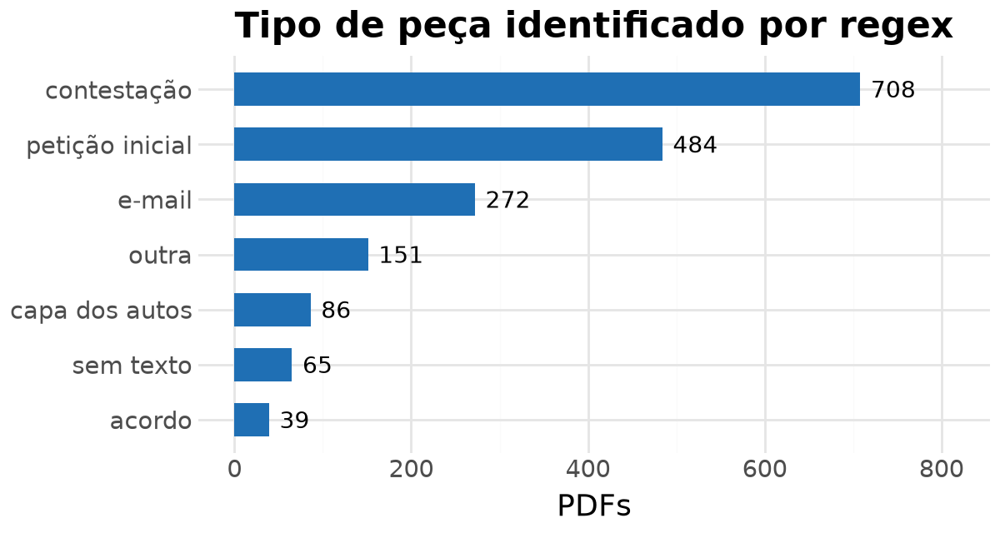
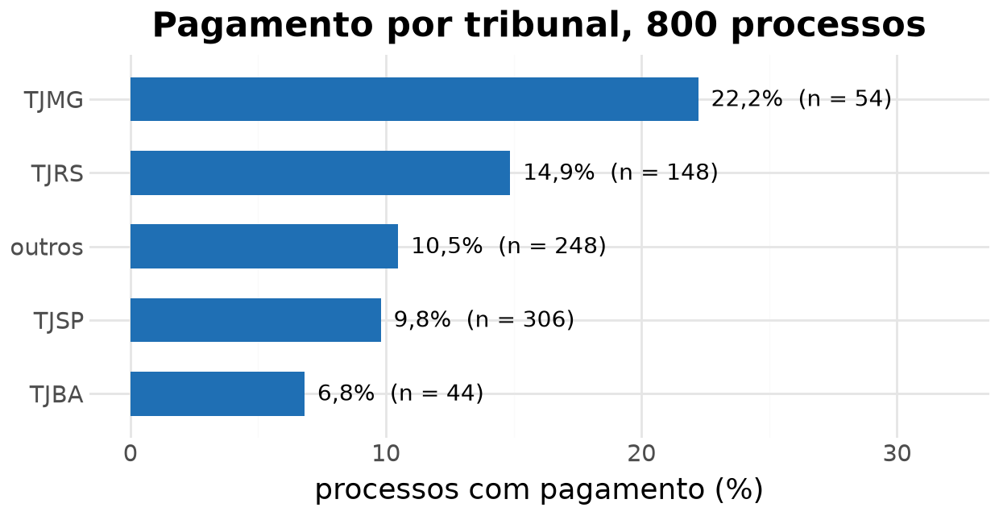
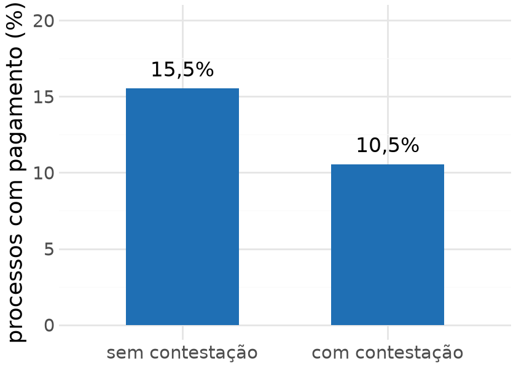

Aula 16 · Ciência de Dados Aplicada ao Direito II
06/10/2026
| tipos de variáveis | pergunta típica | visualização | método |
|---|---|---|---|
| duas categóricas | as variáveis são estatisticamente independentes? | barras empilhadas com a proporção dentro de cada grupo | qui-quadrado |
| duas binárias | a proporção é a mesma nos dois grupos? | barras com a proporção de cada grupo | duas proporções |
| numérica e categórica (2 grupos) | a média é a mesma nos dois grupos? | boxplot por grupo | teste t |
| numérica e categórica (3 ou mais) | as médias são todas iguais? | boxplot por grupo | ANOVA |
| duas numéricas | existe relação linear entre elas? | gráfico de dispersão | correlação e regressão |
As duas primeiras linhas são as de hoje. As outras chegam nas aulas 17 e 18. Em todas, a variável que vamos testar é construída a partir dos documentos dos processos, e não recebida pronta.
a planilha do banco
30 mil contratos de financiamento de veículo que viraram processo, com o número CNJ, a situação do contrato, o valor financiado, a taxa e o valor que o banco pagou no processo, quando pagou.
os documentos
47 mil PDFs em nove arquivos compactados, 89 GB. Cada processo tem dois ou três: a petição inicial do autor, a contestação do banco e, às vezes, um e-mail do escritório ou o acordo.
a amostra das aulas
800 processos sorteados entre os 21 mil que têm PDF. Em 11,6% deles o banco pagou alguma coisa.
o que temos
1530842_20210916135114.pdfo que queremos
A ponte entre a planilha e os PDFs é o número no nome do arquivo: ele é o mesmo que aparece depois do “CV” na coluna pasta (CV1530842_4093 corresponde a 1530842_….pdf).
| ferramenta | o que faz | exemplo nesta base | vale a pena quando |
|---|---|---|---|
| expressão regular | encontra trechos que têm sempre a mesma forma | tribunal no número CNJ; “valor da causa R$ 21.593,82”; “CONTESTAÇÃO” no começo do PDF | o campo tem formato padronizado e o volume é grande |
| modelo de linguagem | lê o texto e responde perguntas sobre ele | a tese principal da inicial; se o autor pede dano moral | a informação está no sentido do texto, e há como conferir uma amostra |
o critério
A escolha depende da natureza do campo. Usar modelo para extrair um número de processo é pagar caro por algo exato e gratuito. Usar regex para decidir a tese é pedir a um padrão de caracteres que interprete.
texto de origem (fictício)
“EXCELENTÍSSIMO SENHOR DOUTOR JUIZ DE DIREITO DA 3ª VARA CÍVEL DA COMARCA DE CAMPINAS/SP. Processo nº 1004521-33.2023.8.26.0114. JOÃO PEREIRA, já qualificado nos autos da ação revisional…”
O número CNJ tem forma fixa, NNNNNNN-DD.AAAA.J.TR.OOOO: o J igual a 8 é a Justiça Estadual e o TR 26 é São Paulo. Por isso o tribunal sai em 100% dos processos.
Os dois textos são fictícios, no formato das peças reais: a contestação se anuncia no primeiro parágrafo, e a inicial diz que “vem propor a ação”.
petição A (fictícia)
“…Dá-se à causa o valor de R$ 21.593,82. Termos em que pede deferimento.”
petição B (fictícia)
“…Atribui-se à demanda o montante de R$ 18.000,00. Nestes termos, pede deferimento.”
Na petição B o padrão não acha nada (None): ela diz o mesmo com outras palavras. Na amostra, o valor da causa aparece em cerca de metade das iniciais.

Os 1.805 PDFs dos 800 processos. “Sem texto” são PDFs escaneados, só imagem.
import pandas as pd
from plotnine import ggplot, aes, geom_col, geom_text, coord_flip, labs, theme_minimal
pecas = pd.read_parquet("pecas.parquet") # um PDF por linha, com o texto
pecas["peca"] = pecas["texto"].map(tipo_de_peca) # as expressões do slide anterior
contagem = pecas["peca"].value_counts().reset_index() # colunas: peca, count
(ggplot(contagem, aes(x="reorder(peca, count)", y="count"))
+ geom_col(fill="#1f6fb4", width=0.6)
+ geom_text(aes(label="count"), ha="left", nudge_y=12)
+ coord_flip()
+ labs(x="", y="PDFs", title="Tipo de peça identificado por regex")
+ theme_minimal())TRIB = ["TJSP", "TJRS", "TJMG"]
TOTAL = ({TJSP: 300, TJRS: 150, TJMG: 150})
ESPERADO = ({TJSP: [30, 270], TJRS: [15, 135], TJMG: [15, 135]})
function tabela(desvio) {
const pag = {TJSP: 30 + desvio, TJRS: 15, TJMG: 15 - desvio};
return TRIB.map(t => ({tribunal: t, pagou: pag[t], nao: TOTAL[t] - pag[t],
total: TOTAL[t], pct: 100 * pag[t] / TOTAL[t]}));
}
function quiQuadrado(tab) {
return tab.reduce((s, r) => s + (r.pagou - ESPERADO[r.tribunal][0]) ** 2 / ESPERADO[r.tribunal][0]
+ (r.nao - ESPERADO[r.tribunal][1]) ** 2 / ESPERADO[r.tribunal][1], 0);
}
virgula = (x, k = 1) => x.toFixed(k).replace(".", ",")
tab = tabela(d)htl.html`<table class="tabela-ojs">
<thead><tr><th>tribunal</th><th>pagou</th><th>não pagou</th><th>total</th><th>% pagou</th></tr></thead>
<tbody>
${tab.map(r => htl.html`<tr><td>${r.tribunal}</td><td><b>${r.pagou}</b></td><td><b>${r.nao}</b></td><td>${r.total}</td><td>${virgula(r.pct)}%</td></tr>`)}
<tr class="total"><td>total</td><td>60</td><td>540</td><td>600</td><td>10,0%</td></tr>
</tbody>
</table>`Plot.plot({
width: 520, height: 320, marginLeft: 55, style: {fontSize: "15px"},
x: {domain: TRIB, label: null},
y: {domain: [0, 20], label: "% com pagamento", grid: true},
marks: [
Plot.barY(tab, {x: "tribunal", y: "pct", fill: "#1f6fb4"}),
Plot.ruleY([10], {stroke: "#e50505", strokeDasharray: "5,4"}),
Plot.text(tab, {x: "tribunal", y: "pct", text: r => virgula(r.pct) + "%", dy: -9, fontSize: 14})
]
})para a sala
As variáveis são independentes?
\[E_{ij} = \frac{(\text{total da linha } i) \times (\text{total da coluna } j)}{n}\]
na lousa
Célula TJSP e pagou: \(\dfrac{300 \times 60}{600} = 30\). As seis esperadas são 30 e 270 no TJSP, 15 e 135 no TJRS e 15 e 135 no TJMG.
Mover o controle não muda os totais de linha nem de coluna, então as contagens esperadas são sempre as mesmas. No zero, a tabela observada é exatamente a esperada.
\[\chi^2 = \sum \frac{(O - E)^2}{E}\]
com o controle em 3, célula a célula
\[\underbrace{\frac{(33-30)^2}{30} + \frac{(267-270)^2}{270}}_{\text{TJSP}} + \underbrace{0 + 0}_{\text{TJRS}} + \underbrace{\frac{(12-15)^2}{15} + \frac{(138-135)^2}{135}}_{\text{TJMG}} = 0{,}30 + 0{,}03 + 0{,}60 + 0{,}07 = 1{,}0\]
O quadrado impede que sobra e falta se cancelem. A divisão por \(E\) faz uma diferença de 3 numa célula de 15 pesar mais do que a mesma diferença numa célula de 270.
viewof d2 = Inputs.bind(Inputs.range([-12, 12], {step: 1, label: "afastamento da independência"}), viewof d)function lnGama(z) {
const g = 7, c = [0.99999999999980993, 676.5203681218851, -1259.1392167224028,
771.32342877765313, -176.61502916214059, 12.507343278686905,
-0.13857109526572012, 9.9843695780195716e-6, 1.5056327351493116e-7];
if (z < 0.5) return Math.log(Math.PI / Math.sin(Math.PI * z)) - lnGama(1 - z);
z -= 1; let x = c[0];
for (let i = 1; i < g + 2; i++) x += c[i] / (z + i);
const t = z + g + 0.5;
return 0.5 * Math.log(2 * Math.PI) + (z + 0.5) * Math.log(t) - t + Math.log(x);
}
function gamaInferior(a, x) { // P(a, x), regularizada
if (x <= 0) return 0;
if (x < a + 1) {
let soma = 1 / a, termo = 1 / a;
for (let n = 1; n < 500; n++) { termo *= x / (a + n); soma += termo; if (termo < soma * 1e-12) break; }
return soma * Math.exp(-x + a * Math.log(x) - lnGama(a));
}
let b = x + 1 - a, c = 1e300, dd = 1 / b, h = dd;
for (let i = 1; i < 500; i++) {
const an = -i * (i - a); b += 2;
dd = an * dd + b; if (Math.abs(dd) < 1e-300) dd = 1e-300;
c = b + an / c; if (Math.abs(c) < 1e-300) c = 1e-300;
dd = 1 / dd; const del = dd * c; h *= del; if (Math.abs(del - 1) < 1e-12) break;
}
return 1 - Math.exp(-x + a * Math.log(x) - lnGama(a)) * h;
}
quiDens = (x, k) => x <= 0 ? 0 : Math.exp((k / 2 - 1) * Math.log(x) - x / 2 - (k / 2) * Math.log(2) - lnGama(k / 2))
quiValorP = (x, k) => 1 - gamaInferior(k / 2, x / 2)
function quiCritico(k, alfa = 0.05) {
let lo = 0, hi = 200;
for (let i = 0; i < 100; i++) { const m = (lo + hi) / 2; if (quiValorP(m, k) > alfa) lo = m; else hi = m; }
return (lo + hi) / 2;
}
function graficoQui(qui, gl, xmax) {
const crit = quiCritico(gl);
const pts = d3.range(0.02, xmax, xmax / 400).map(x => ({x, y: quiDens(x, gl)}));
const ymax = Math.min(0.55, d3.max(pts, p => p.y) * 1.15);
return Plot.plot({
width: 640, height: 340, marginLeft: 60, marginBottom: 48, style: {fontSize: "15px"},
x: {domain: [0, xmax], label: "qui-quadrado", labelAnchor: "center", labelOffset: 40},
y: {domain: [0, ymax], label: "densidade", grid: true},
marks: [
Plot.areaY(pts.filter(p => p.x >= qui), {x: "x", y: p => Math.min(p.y, ymax), fill: "#e50505", fillOpacity: 0.35}),
Plot.line(pts, {x: "x", y: p => Math.min(p.y, ymax), stroke: "#333", strokeWidth: 2}),
Plot.ruleX([crit], {stroke: "#555", strokeDasharray: "6,4"}),
Plot.text([crit], {x: d => d, y: ymax * 0.92, text: d => "valor crítico 5%: " + virgula(d, 2), dx: 6, textAnchor: "start", fontSize: 15}),
Plot.ruleX([Math.min(qui, xmax)], {stroke: "#e50505", strokeWidth: 2})
]
});
}htl.html`<table class="tabela-ojs pequena">
<thead><tr><th></th><th>pagou</th><th>não pagou</th></tr></thead>
<tbody>${tab.map(r => htl.html`<tr><td>${r.tribunal}</td><td>${r.pagou}</td><td>${r.nao}</td></tr>`)}</tbody>
</table>
<div class="resultado-qui">
<div>qui-quadrado = <b>${virgula(quiQuadrado(tab), 2)}</b></div>
<div>graus de liberdade = <b>2</b></div>
<div>valor-p = <b>${virgula(quiValorP(quiQuadrado(tab), 2), 3)}</b></div>
</div>`Se as variáveis fossem independentes, o qui-quadrado seguiria essa curva. O valor-p é a área pintada, à direita do valor observado. Quando o valor observado passa da linha pontilhada, o valor-p fica abaixo de 5%.
viewof dim = Inputs.form({
linhas: Inputs.range([2, 5], {value: 3, step: 1, label: "linhas"}),
colunas: Inputs.range([2, 5], {value: 2, step: 1, label: "colunas"})
}, {template: (i) => htl.html`<div class="controles-gl">${Object.values(i)}</div>`})ficticia = {
let semente = dim.linhas * 17 + dim.colunas * 31;
const sorteio = () => (semente = (semente * 1103515245 + 12345) % 2147483648) / 2147483648;
return d3.range(dim.linhas).map(() => d3.range(dim.colunas).map(() => 40 + Math.round((sorteio() - 0.5) * 16)));
}
estatFict = {
const r = ficticia.map(l => d3.sum(l)), c = d3.range(dim.colunas).map(j => d3.sum(ficticia, l => l[j]));
const n = d3.sum(r);
let q = 0;
ficticia.forEach((l, i) => l.forEach((o, j) => { const e = r[i] * c[j] / n; q += (o - e) ** 2 / e; }));
return {qui: q, gl: (dim.linhas - 1) * (dim.colunas - 1)};
}htl.html`<table class="tabela-ojs pequena">
<thead><tr><th></th>${d3.range(dim.colunas).map(j => htl.html`<th>categoria ${String.fromCharCode(65 + j)}</th>`)}</tr></thead>
<tbody>${ficticia.map((l, i) => htl.html`<tr><td>grupo ${i + 1}</td>${l.map(v => htl.html`<td>${v}</td>`)}</tr>`)}</tbody>
</table>
<div class="resultado-qui">
<div>graus de liberdade = (${dim.linhas} − 1) × (${dim.colunas} − 1) = <b>${estatFict.gl}</b></div>
<div>qui-quadrado = <b>${virgula(estatFict.qui, 2)}</b></div>
<div>valor crítico 5% = <b>${virgula(quiCritico(estatFict.gl), 2)}</b></div>
<div>valor-p = <b>${virgula(quiValorP(estatFict.qui, estatFict.gl), 3)}</b></div>
</div>`Graus de liberdade são quantas células da tabela podem variar livremente depois de fixados os totais: \((\text{linhas} - 1) \times (\text{colunas} - 1)\). Tabelas maiores têm curva mais deslocada para a direita e valor crítico maior.

Tribunais com menos de 40 processos na amostra foram agrupados em “outros”. Sem esse agrupamento há células com contagem esperada próxima de zero, e o teste não vale.
from scipy.stats import chi2_contingency
# tribunais com menos de 40 processos vão para "outros"
frequentes = processos["tribunal"].value_counts()
processos["tribunal_grupo"] = processos["tribunal"].where(
processos["tribunal"].isin(frequentes[frequentes >= 40].index), "outros")
tabela = pd.crosstab(processos["tribunal_grupo"], processos["pagou"])
qui, valor_p, gl, esperado = chi2_contingency(tabela)
print(f"qui-quadrado = {qui:.2f} gl = {gl} valor-p = {valor_p:.3f}")qui-quadrado = 9.71 gl = 4 valor-p = 0.046como relatar
Tribunal e pagamento não são independentes (\(\chi^2 = 9{,}71\); gl = 4; valor-p = 0,046): de 6,8% no TJBA a 22,2% no TJMG.
Não indica que o tribunal causa o pagamento. Os tribunais recebem casos diferentes.
Não mede o tamanho da diferença, só o quanto ela é difícil de atribuir ao acaso.
Não diz qual tribunal destoa. Para isso, compare as proporções de cada linha.
Depende do agrupamento escolhido: outro corte pode dar outro valor-p.
onde estão os arquivos
Base: btg_aulas.csv, no BlackBoard, em Materiais e Informações. É sigilosa: não compartilhe fora da turma nem suba no GitHub.
Notebook: aula16_duas_categoricas.ipynb, com link na atividade Aula 16 do BlackBoard. O link abre no GitHub ou direto no Colab.
como abrir
No Colab: abra o notebook pelo link “abrir no Colab”, clique no ícone de pasta, à esquerda, e arraste btg_aulas.csv para lá.
No Jupyter (VS Code ou Anaconda): baixe o notebook e deixe btg_aulas.csv na mesma pasta dele.
O notebook lê a base com pd.read_csv("btg_aulas.csv"). Se aparecer FileNotFoundError, o arquivo não está na mesma pasta do notebook.
O status do contrato está associado ao pagamento? Em duplas, complete as lacunas ____ da parte a do notebook: a tabela de dupla entrada, a proporção dentro de cada status, as contagens esperadas e o teste depois de juntar “EM DIA” com “LIQUIDADO”.
para entregar
Escreva o resultado em uma frase, com o qui-quadrado, os graus de liberdade e o valor-p.
| pagou | total | proporção | |
|---|---|---|---|
| sem contestação | 27 | 174 | 15,5% |
| com contestação | 66 | 626 | 10,5% |

“Tem contestação” é se entre os PDFs do processo há um classificado como contestação pela expressão regular. As duas variáveis são binárias, então dá para comparar diretamente as duas proporções.
Numa tabela 2x2 sem correção de continuidade, \(\chi^2 = z^2\) (\(1{,}81^2 \approx 3{,}28\)) e o valor-p é o mesmo. A vantagem das duas proporções é o intervalo da diferença.
intervalos = {
sorteio;
const p1 = 27 / 174, p2 = 66 / 626, n1 = 174, n2 = 626, verdade = (p1 - p2) * 100;
const binom = (n, p) => { let s = 0; for (let i = 0; i < n; i++) s += Math.random() < p; return s; };
return d3.range(40).map(i => {
const a = binom(n1, p1) / n1, b = binom(n2, p2) / n2;
const ep = Math.sqrt(a * (1 - a) / n1 + b * (1 - b) / n2);
const dif = (a - b) * 100, m = 1.96 * ep * 100;
return {i: i + 1, dif, lo: dif - m, hi: dif + m,
cobre: dif - m <= verdade && verdade <= dif + m, exclui_zero: dif - m > 0 || dif + m < 0};
});
}Plot.plot({
width: 560, height: 430, marginLeft: 30, marginBottom: 48, style: {fontSize: "15px"},
x: {domain: [-15, 25], label: "diferença em pontos percentuais", grid: true, labelAnchor: "center", labelOffset: 40},
y: {axis: null},
marks: [
Plot.ruleX([0], {stroke: "#888"}),
Plot.ruleX([(27 / 174 - 66 / 626) * 100], {stroke: "#1f6fb4", strokeDasharray: "6,4", strokeWidth: 2}),
Plot.link(intervalos, {x1: "lo", x2: "hi", y1: "i", y2: "i",
stroke: r => r.cobre ? "#1f6fb4" : "#e50505", strokeWidth: 2.5}),
Plot.dot(intervalos, {x: "dif", y: "i", fill: r => r.cobre ? "#1f6fb4" : "#e50505", r: 2.5})
]
})htl.html`<div class="resultado-qui">
<div><b>${d3.sum(intervalos, r => r.cobre)}</b> de 40 intervalos contêm a diferença verdadeira (linha tracejada)</div>
<div><b>${d3.sum(intervalos, r => r.exclui_zero)}</b> de 40 excluem o zero, ou seja, teriam valor-p < 0,05</div>
</div>`o que significa 95%
Repetindo a amostragem muitas vezes, 95% dos intervalos conteriam a diferença verdadeira. A confiança é no método.
ligação com o valor-p
Intervalo contém o zero quando o valor-p passa de 0,05. Aqui: de -0,9 a 10,9, valor-p de 0,07.
o que não escrever
“Não há diferença entre processos com e sem contestação.”
o que escrever
A diferença estimada é de 5 pontos percentuais, e o intervalo de 95% vai de -0,9 a 10,9 pontos. Estes dados não mostram diferença ao nível de 5%, mas são compatíveis tanto com nenhuma diferença quanto com uma diferença de 10 pontos.
0,07 e 0,04 descrevem evidências parecidas. Relatar a estimativa e o intervalo evita transformar uma régua contínua num carimbo de sim ou não.
A proporção de pagamento é a mesma nos processos com e sem petição inicial entre os documentos do banco?
com = processos[processos["tem_inicial"]]["pagou"]
sem = processos[~processos["____"]]["pagou"]
z, valor_p = proportions_ztest([sem.sum(), com.sum()], [len(sem), len(____)])
baixo, alto = confint_proportions_2indep(sem.sum(), len(sem), com.sum(), len(com),
method="wald")para entregar
Escreva a diferença, o intervalo de 95% e o valor-p em uma frase. Cuidado: o teste mostra associação. Não escreva que ter a inicial no dossiê causa alguma coisa.
hoje
quinta-feira, 08/10
Uma variável numérica e uma categórica: teste t e ANOVA.
E as variáveis que só um modelo de linguagem consegue construir, porque exigem ler a petição.